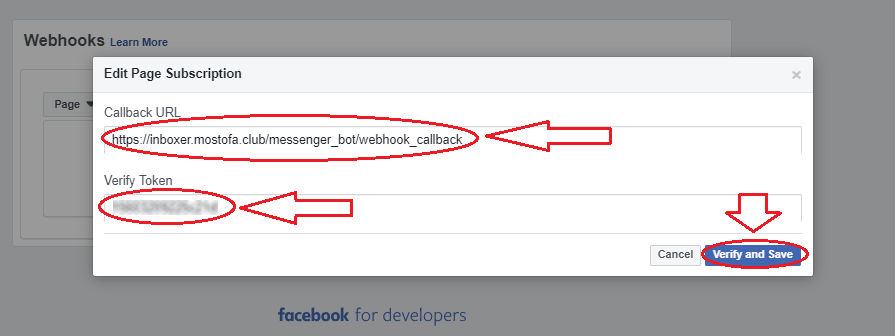
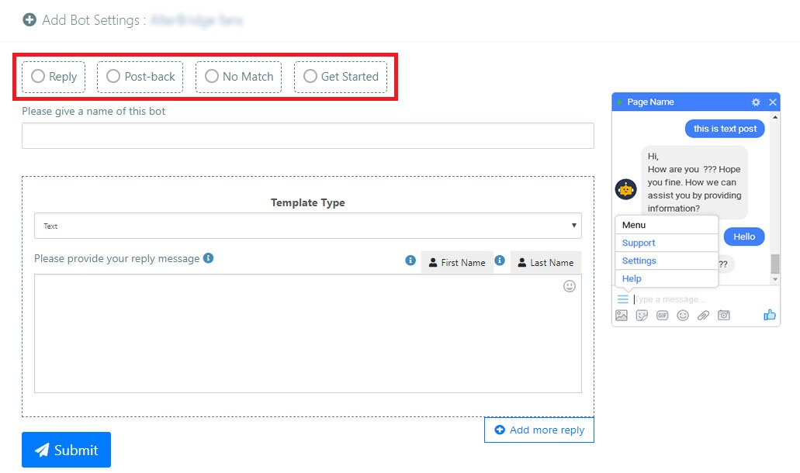
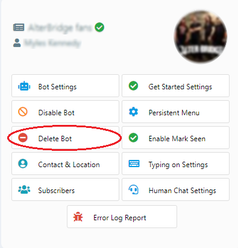

User Manual of Bot Inboxer - A EZ Inboxer Add-on : Multi-account & Multi-page Facebook Messenger Chat Bot
- Created: 24th January 2018
- Latest update: 18th Nov 2018
- By: EZ Inboxer Team | xeroneitbd
- Website: http://xeroneit.net
- Email: info@xeroneit.net
- Developed by : XerOne IT
About Botinboxer Add-on
Bot Inboxer - a EZ Inboxer add-on, is Facebook Messenger Bot application. You will be able to set your messenger bot for multiple pages. The bot can reply with text, post back button, quick reply, image, video, template, carousel template & so on. Setting up your messenger bot with Bot Inboxer will reply all your customers in messenger very fast.
Key Features
- Multi Users
- Multiple Facebook Accounts
- Multiple Facebook Pages BOT
- Multiple Reply Settings
- Text, File, Image, Audio, Video, Gif Message
- Generic Template.
- Carousel Template
- Post Back Buttons, Quick Reply Buttons
- Button Of URL, Phone Numer.
- Quick Reply button of user Email, Phone Number.
- Personalized Reply with First Name, Last Name.
- Mark Seen Action enable option
- Typing on Enable Option
- Error reporting log of reply.
- Different Persistent Menu add for Different locale.
- Nested Persistent Menu
- Your Brand URL set option in Persistent Menu
- Collect Email From Quick Reply
- Collect Phone Number From Quick Reply
- Download Email & Phone Number As CSV
Installation Instructions
Installing Botinboxer Add-on is so Easy. Follow the below instructions to install the add-on.
- Log into your EZ inboxer Application
- Go to Add-ons Menu.
- Click on Upload New Add-on button.
- Upload Botinboxer Add-on Zip File.
- Now add-on has been uploaded and all you need to do is to activate the add-on. Click on the Activate button and activate with your purchase code.

General Settings

Give access to user to set their own Facebook APP: This section is for can users set their own app or they have to use the admin app.We recommend to keep it as NO.
Persistent Menu:
The Persistent Menu is always available to the user. This menu should contain top-level actions that users can enact at any point. Having a persistent menu easily communicates the basic capabilities of your bot for first-time and returning users. The menu will automatically appear in a thread if the person has been away for a certain period of time and returns.
The following two options is only work when you give the module access of from the Package Settings during creating a Package.
Persistent menu copyright text: Persistent Menu copyright text is to show the persistent menu name.
Persistent menu copyright URL: Persistent Menu URL refers the url when anyone click on the persistent menu it will redirect him/her into the given url.
User login type: This section refers how may an user import their facebook account into the application. There are two options which are describe below:
I want manage_page permission approval: This option is for login with facebook button and have to submit the app for review. And user can import their account after the app gets approval.We higly recommend this option.
I do not want manage_page permission approval. Keep user as tester of my app:
If the admin don't want the app aproval, can select this option to keep users as tester of the application. If this option is selected in the settings an app request section will appear (see the below image) instead of login with facebook button in the import account section. User will send app request to the admnin and after request approval of admin, user can import their account.
Facebook API Settings & App Approval
To start using Botinboxer Add-on, at first you've to set your Facebook API Settings Correctly and Submit your App for review.
Instruction of Facebook API Settings:
After Successful installation, now you've to set facebook app for botinboxer add-on. This section will guide you create and set facebook successfully into botinboxer add-on. Follow the below steps as given:
-
Go to Messenger Bot -> Facebook API Settings menu to get started. Then click on Add button.

-
A Form will appear with information like below image. This is the form to add your facebook app information, you will get app domain, site url, valid oauth redirect uris needed to create facebook app here. Copy the urls and create your facebook app following the process below. You can create multiple app and can add but only one can be enabled at a time.
- Create your own facebook app and put APP ID and APP Secret here. System will take care of everything else.
- How to create facebook app and get API ID & APP Secret?
-
Login to https://developers.facebook.com/ using your facebook account and click on Add a new app.
-
Give a "Display Name" and click on Create App ID button.
-
Go to Settings -> Basic menu from sidebar. Here you will find your APP ID & APP Secret of your app. Put your Application Domain in "App Domains" field and also put your application privacy policy URL and Terms of Service URL in the corresponding filed (See the image below). Set your app icon and Select Messaging from Category section.
-
Scroll down and click on "Add Platform" button, it will bring the following popup. Select "Website" from popup.
-
It will bring an input field of "Site URL". Put your site url in the field and click on Save Changes button.
-
Now click on Product menu from sidebar. Scroll down and you've to setup first facebook login, click on Set Up.
-
It will bring the following page, click on Web.
-
Click on save button.
-
Click on Facebook Login -> Settings menu. Then put your all three Valid OAuth redirect URIs in the Valid OAuth Redirect URIs field (see the image). Then click on Save Changes button.
-
Now Go to Product From the sidebar menu. From there you need to set up your webhook. Click on Set Up button of the webhooks (See below image).
-
It will bring following page. Select Page option from Drop-down and then click on Subscribe to this object button (see below image).
-
A modal will appear like below image. Put the Callback URL and Verify token into the corresponding filed. Then click on Verify and Save button.
 -
Now Click on Product from sidebar again and now you've to setup Messenger. Click on Set Up of the Messenger section.
-
Scroll Down to the Webhook Section and click on Edit Events button.
-
Select the four Subscription fileds as like below image and then click Save button.
-
Now Go to Settings -> Basic from sidebar. Copy App ID and App Secret and paste them into the application's corresponding Facebook App ID & Facebook App secret field. Then click on Save button.
-
Now import your account by click on "f" icon as shown in below image.
-
Click on Login With Facebook button to complete account import.
Video Tutorial On How to Complete Facebook API Settings
If you think that the above guidelines are not enough for you, you can also watch our Video tutorial on Facebook API Settings.
Instructions On How to Submit Your Facebook APP for Review to Facebook
After Successfully completed the facebool app settings, now you've to submit your app for review. Follow the instruction step by step that given in the below link and submit your app for review. Click on the below button.
Messenger Bot Account Import
After Completing Facebook API Settings Properly, Now You've to Import your Facebook Account.
- Clicking Import Account Menu will bring you a button named Login with Facebook, Simply Clicking it will start importing your Facebook account.
- Allow the permission as the picture given below and You can choose privary friends or public. It privacy is set to "Friends" the posts will be only visible to your friends. If you set it to "Public" then the posts will be visible to everyone. You should use "Public" for marketing purposes.

- Finally your account is imported now !!! You will see your pages.

How to Enable/Disable Bot
In Import Account Menu You Will find your imported accounts and pages. First you need to enable bot for a particular page to create bot for that page.
Domain Whitelist
You can add buttons and can put your link when bot replies your visitors. To put a link you need to whitelist the domain. Suppose you will use several website links in your bot xyz.com,123.com,abc,com etc. You can add these domains to page whitelist now. It's not mandatory because when you create a bot and put a link that is not whitelisted system will also whitelist it automatically.
Bot Settings
In Bot Settings Section, You'll See all of your Bot Enabled Pages with the settings options.
Bot Settings Instructions:
Click on the Bot Settings menu to see the current bot settings and you can See,edit or delete any existing bot settings, even you can search bot settings if you want. Also You can add a new bot setting by click on Add Bot Settings button at the top right corner.-
Add Bot Settings: Click On the Add Bot Settings button to get the settings form to add a new bot settings.

In the bot settings form there are four types of replies(see the above image):
- Reply: This is keyword based reply. Replying Keywords must be comma separated.
- Post-back: This reply is button click reply. For this you must have a Post-back ID which you've to create from Post-back Manager Menu. [In postback template when you are creating a postback reply template, this postback will come during BOT settings in drop down menu if you select button type as postback.] You can see the video how it works How Postback Manager & Postback reply Works for BOT Inboxer
- No Match: If the bot found no matched message then it'll send a generic reply.
- Get Started: It will Generate replies when users click on the Get Started button.
- Text:
Text Reply Template is to send simple text reply with message.
- Video:
Video Reply Template is to send Reply with a video that will play on messenger.
- Text With Button:
Text With Button Reply Template is to Send Reply With Text and Buttons [every button requires a post-back ID for identification and you need to add another bot settings to handle that post-back button]
- List:
List Reply Template is to Send reply with a list of links with thumbnail and link action.
- Image:
Image Reply Template is to send Reply with an image.
- File:
File Reply Template is to send reply with an attachment.
- Generic Template:
Generic Template is to send reply with Single image,image action URL,title,subtitle and buttons [either button can be a post-back button or can open a website URL]
- Audio:
Audio Reply Template is to send Reply with an audio that will play on messenger.
- Quick Reply:
Reply with text and buttons [every button requires a post-back ID for identification and you need to add another bot settings to handle that post-back button]
- Carousel:
Carousel Reply Template is to send reply with an Array of generic templates - multiple generic templates display as slider.

There are Ten types of reply templates in the bot settings(see the below image):
You can add maximum 3 reply templates in a bot setting.
Get Started Settings:
If you enable this, When someone come to your page first time chat box will pop up and a button called "Get Started" will appear. You can add the action reply for clicking the button in "Bot Settings" (described beow).
Disable Bot:
If you want to disable the bot of a page, you can do it by click on disable bot button.
Persistent Menu [Requires "Get Started" Button]:
The Persistent Menu is always available to the user. This menu should contain top-level actions that users can enact at any point. Having a persistent menu easily communicates the basic capabilities of your bot for first-time and returning users. The menu will automatically appear in a thread if the person has been away for a certain period of time and returns.
You can create multi-level (nested) persistent menu and also can have different menu for different locale.
Click On the Persistent Menu button to get started and click on create persistent menu button to create persistent menu.


You'll get a form like as below image.
You Must have to set a persistent menu for "Default" Locale and publish it. It's mandatory by Facebook.
Persistent Menu For Member User: If You have enabled "Persistent Menu Copyright" module for the user. That means the user can create 2 level 1 menu and the 3rd one will be added automatically by system taking the settings from Messenger Bot > General Settings. If the user have assigned Persistent Menu Copyright module and the settings are blank then system takes product name and app url by default.
Human Chat Settings:
Sometimes subscribers don't want to chat with a robot. They want to chat with a human with their query. This setting is for giving them the option with whom he/she wants to talk (see Fig-0).
First of all, you have to set bot settings for human/robot button. In the bot settings form (see the below image), select text with button from template type and at the bottom provide button name and select Button type as Chat with Human/Chat with Robot (see the below image)

When a user clicks on human/robot button (see Fig-0), it will automatically reply with default chat with human/chat with robot templates (see below images) which is by default exists in the system. If you want to resume chat with human/chat with robot, simply just click on the Resume chat with Bot/Chat with human button (see images).
If you want to update the default templates, you can simply click on the button to update the default template (see the Fig-3).
Delete Bot:
If you want to delete an enabled bot from bot setting, you may delete bot by click on Delete Bot button. It will delete the bot from your bot settings list.
Enable Mark Seen:
If you enable mark seen option then you'll able to see when your message was read.
Typing Settings:
Typing Settings refers when a user type a message it'll show typing process in messanger during send a message and you can set a delay from typing setting for how much time the typing will appear or after hoe much time the message will be sent.
Contact & Location:
You can get subscribers contact & Location information by setting a bot. First you've to set bot for user email,user phone, user location (see the below image). Select quick reply as template type and from the bottom give a name of button and select any of button type from button type field. [you can also add more button by click on add more button at the bottom right corner of the form.], whenever you get any email, location or phone number in messanger through bot setting, it'll be stored in your database.
Click on the Contact & Location button to see your subscribers email/phone/location list. You can Download your subscribers email and phone numbers by click on Download email & phone list button. There are also three buttons through whom You can Update the default subscription template of email/phone/location (see the below image).
Subscribers:
After you setup bot and it starts replying people they will be your Messenger lead/subscriber. If you want to stop bot for any particular lead/subscriber and chat by yourself, simply click the "Stop Bot" button.
Error Log Report:
If you Get any type errors, you can see the error at error log report menu. Click on Error Log Report button to see if there any error exists or not.Post-back Manager
Post-back Manager is the section Where you can create all of your post-back templates for post-back replies. Click on the Post-back Manager Menu to see the list of your post-back templates of post-back replies. You can also create new post-back template from here.
How Post-back ID Works:
In postback template when you are creating a postback reply template, this postback will come during BOT settings in drop down menu if you select button type as postback. And if you add any postback id as postback template's child , You can set the reply of that postback id from BOT settings -> Postback top menu.
In Post-back Manager, When you're creating post-back templates for post-back replies, you have to give unique postback id and child post-back id for each template.
Cron Job/Scheduler
There are two cron jobs in Botinboxer Add-on that does two different tasks. Though these cron jobs are not mandatory to use botinboxer's features,but it will be needed to do some tasks if you need these.
-
Download Profile Pic [Every 2 hours]: If you want to download your messenger bot subscribers profile picture then you have to set this cron job on your server. If you do not want to download subscriber profile pictures then you do not need this cron job.
-
Update Profile Information [Every 5 Minutes] : If you want to migrate facebook lead from EZ Inboxer to Bot Inboxer subscriber, then you have to set this cron job on your server to get subscribers information.
Quick Resources
This is the place where you can see all the resources link in one place.
Facebook APP Business Verification Process Best Practices
For business verification of facebook App, Read the article on business verification best practice. Click On the below button to read the article.
Business Verification Process